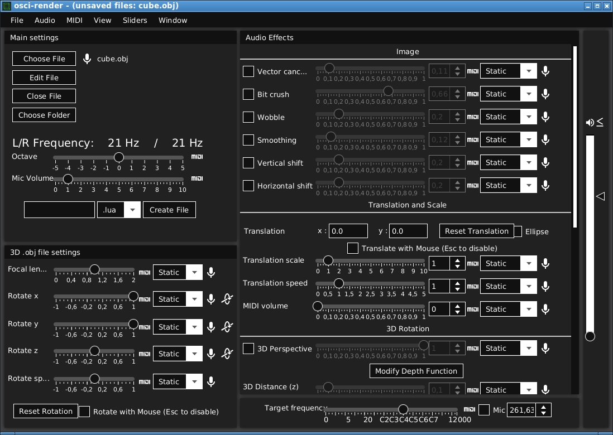
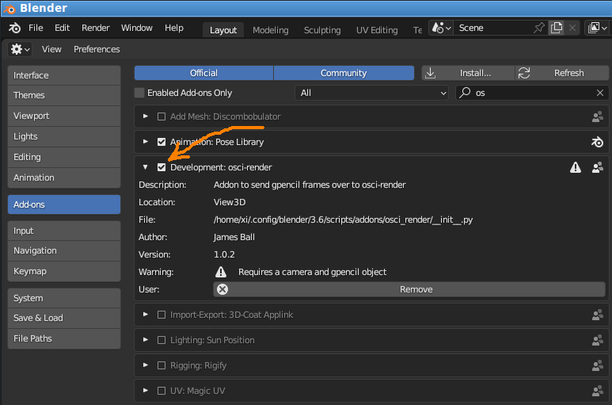
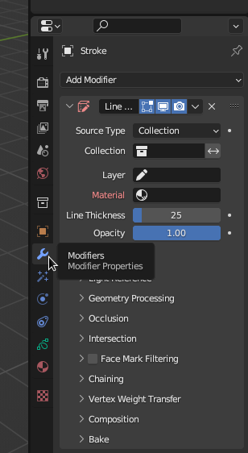
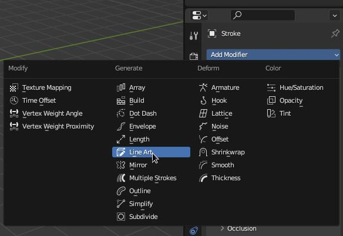
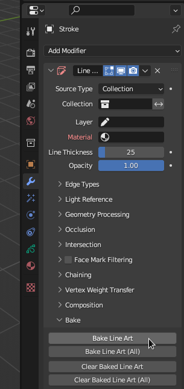

Для создания музыки на осциллографе, существует проект osci-render:
https://github.com/jameshball/osci-render
Чтобы им воспользоваться на Debian Linux Stable 11, нужно установить Blender версии не менее 3.1.x (где x - какое-то число, не успел записать). Все дальнейшие действия производились в Blender 3.6.1.
Так же должен быть установлен пакет jackd и интерфейс управления QJackCtl.
Так же необходима Java от Oracle не менее 19-й версии.
Последовательность действий следующая:
1. Установить osci-render из deb-пакета. При установке пакета может возникнуть ошибка:
dpkg-deb: error: archive 'osci-render_1.33.2_amd64.deb' uses unknown compression for member 'control.tar.zst', giving up
или
dpkg-deb: ошибка: в архиве «osci-render_1.33.2_amd64.deb» используется неизвестное метод сжатия для «control.tar.zst», прекращаем
Тогда нужно установить архиватор:
apt-get install zstd
И затем deb-пакет надо перепаковать скриптом:
repack_deb_package.sh
#!/bin/bash
DEBPACKAGE="${1%.deb}"
[[ -z "$1" ]] && echo "Usage: $0 <package.deb>" && exit 1
set -e
ar x $DEBPACKAGE.deb
zstd -d < control.tar.zst | xz > control.tar.xz
zstd -d < data.tar.zst | xz > data.tar.xz
ar -m -c -a sdsd "$DEBPACKAGE"_repacked.deb debian-binary control.tar.xz data.tar.xz
rm debian-binary control.tar.xz data.tar.xz control.tar.zst data.tar.zst
Запуск перепаковки происходит следующей командой (имя перепаковываемого файла указывается без .deb):
./repack_deb_package.sh ./osci-render_1.33.2_amd64
В результате будет создан файл osci-render_1.33.2_amd64_repacked.deb. Его и нужно установить.
2. Запустить QJackCtl, но не запускать jackd.
3. Запустить osci-render путем запуска бинарника:
/opt/osci-render/bin/osci-render
Или же, можно скачать Jar-файл для Unix, и запустить его в среде Java следующей командой:
/usr/lib/jvm/jdk-20/bin/java "-Dfile.encoding=UTF8" "-Djdk.gtk.version=2" -jar ./osci-render-unix-1.33.2.jar
4. После запуска osci-render, в его интерфейсе надо нажать кнопку Start new proj... . Программа подвиснет, и чтобы она продолжила работать, надо переключиться в QJackCtl и запустить jackd. Osci-render перейдет в свой рабочий интерфейс.
Если перехода в рабочий интерфейс не случилось, нужно попробовать сделать наоборот: запустить jackd в QJackCtl, запустить oscii-render, остановить jackd в QJackCtl, oscii-render покажет рабочий интерфейс, после чего снова можно включить jackd.
Иногда osci-render, установленный из deb-файла не работает или зависает наглухо при переходе в рабочий интерфейс. Тогда нужно попробовать запустить jar-файл через Java. Следует учитывать, что нужна именно Java от Oracle, версии не менее 19. В OpenJDK программа нормально не работает.
Рабочий интерфейс osci-render выглядит так:

5. Запустить Blender. Установить в нем плагин osci-render-blender-addon.zip. Для этого надо выбрать разадел Preferences:
В нем надо выбрать раздел Add-ons, и нажать сверху кнопку Install... . Нужно будет выбрать zip-файл с плагином и нажать Ок. Плагин будет установлен. Нужно не забыть нажать на галку, чтобы плагин активировался:

6. Далее, таким же способом, что выбиралась область Preferences, надо выбрать область Properties. В ней надо выбрать раздел Render (Render Propertis), который открывается путем нажатия на значек фотоаппарата.
В этом разделе надо развернуть osci-render settings, и в развернутой области будет одна-единственная кнопка Connect to osci-render. Ее нужно нажать для соединения Blender и osci-render.
Признаком того, что соединение произошло успешно, будет две вещи:
7. В Blender, таким же образом, что и выбиралась область Properties, надо выбрать область 3D Viewport.
8. В osci-render необходимо вызвать пункт меню: Window - Open software oscilloscope. В результате в системном браузере, например в Firefox, откроется окно с виртуальным осциллографом:

Для того, чтобы этот виртуальный осциллограф открылся, необходимо наличие сети Интернет, потому что, по-сути, в браузере открывается ссылка:
https://james.ball.sh/oscilloscope
9. Все инструменты запущены, и вроде как работают.
Вроде как. Потому что по-умолчанию osci-render должен отправлять на программный осциллограф куб. В интерфейсе возле кнопки Choose File написано cube.obj. И в документации сказано, что это специальный тестовый файл. Однако, осциллограф показывает точку.
Пришлось разбираться, как работает связка osci-render и программного осциллографа. Оказывается, при удачном старте, osci-render становится сервером и создает локальный порт 42988. Порт находится в режиме LISTEN, то есть ждет подключения программного осциллографа. Программный осциллограф, в свою очередь, отрывае WebSocket-соединение по адресу ws://127.0.0.1:42988. И между этими двумя сущностями начинает двигаться какой-то сетевой траффик. По идее, программный осциллограф получает данные от osci-render. Но почему он не показывает тестовый куб - полная загадка.
Был открыт баг-репорт, и нужно ждать когда автор проекта что-нибудь ответит.
https://github.com/jameshball/osci-render/issues/165
10. Далее надо попытаться создать отображаемый объект в Блендере. Для этого надо удалить стандартный куб, выделя его и нажав кнопку Del на клавиатуре. Затем надо нажать Shift+A, и выбрать Grease Pencil, и в подменю кликнуть на какой-нибудь объект, например Monkey или Scene Line Art. В центре координат появится новый объект.
11. Надо выделить созданный объект (он должен стать оранжевым), и в правой части экрана в свойствах выбрать Modifier Properties:

В этой области, в выпадающем меню Add Modifier, надо выбрать Line Art:

Далее, в разделе Bake надо нажать кнопку Bake Line Art, чтобы "запечь" выбранный объект:

12. Согласно документации, при нажатии кнопки Bake Line Art, виртуальный осциллограф должен начать показывать данный объект. Однако на практике, Blender в этот момент сегфолтится.
Writing: /tmp/blender.crash.txt
Ошибка сегментирования
# Blender 3.6.1, Commit date: 2023-07-17 12:50, Hash 8bda729ef4dc
bpy.context.area.ui_type = 'PREFERENCES' # Property
bpy.data.window_managers["WinMan"].addon_search = "os" # Property
bpy.context.area.ui_type = 'PROPERTIES' # Property
bpy.context.space_data.context = 'RENDER' # Property
bpy.context.area.ui_type = 'VIEW_3D' # Property
bpy.ops.object.gpencil_add(align='WORLD', location=(0, 0, 0), scale=(1, 1, 1), type='STROKE') # Operator
bpy.ops.object.delete(use_global=False, confirm=False) # Operator
Deleted 1 object(s) # Info
bpy.context.space_data.context = 'TOOL' # Property
bpy.context.space_data.context = 'RENDER' # Property
bpy.context.space_data.context = 'MODIFIER' # Property
bpy.ops.object.gpencil_modifier_add(type='GP_LINEART') # Operator
# backtrace
# Python backtrace
Что нужно сделать чтобы без ошибки увидеть объект, транслируемый из Blender, пока непонятно, нужно разбираться дальше.
Был открыт баг-репорт, разработчики подтвердили наличие проблемы. Надо ждать новой версии Blender, в которой эта проблема будет исправлена:
https://projects.blender.org/blender/blender/issues/110751#issuecomment-992233